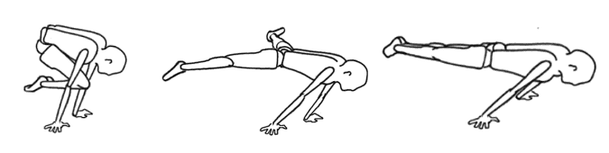
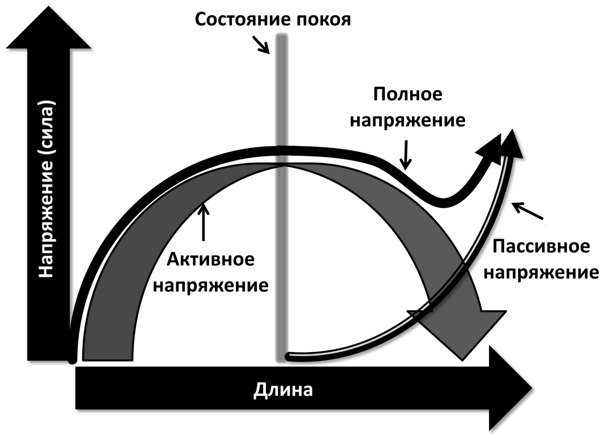

Принцип рычага — основа силового тренинга с собственным весом
Говоря по-простому, сила рождается силой. Подвергая мышцы и нервную систему правильному стрессу с помощью различных упражнений, мы вызываем рост силы и массы.
Программы силовых тренировок с собственным весом предлагают четко выстроенные прогрессии, с помощью которых можно увеличивать стимулирование мышц без дополнительного отягощения. А достигается это за счет уменьшения длины рычага.
Эффект рычага — это механический перевес, который достигается за счет длины рычага. В нашем же случае, мы уменьшаем этот эффект, то есть уменьшаем механический перевес, который получает тело в момент выполнения упражнений. При этом увеличиваются мышечные усилия, которые возникают при определенных положениях или движениях тела. И таким способом даже без использования внешних утяжелителей можно развить поразительную силу мышц.
Уменьшение эффекта рычага в физических упражнениях в основном реализуется двумя способами: изменением положения тела и изменением длины мышцы.
- Изменение положения тела для уменьшения эффекта рычага.
Например, и в прогрессии горизонта и в прогрессии переднего виса есть положения, которые усложняют выполнение.
Основы физики говорят, что чем длиннее тело, тем тяжелее упражнение. Наши кости — это рычаги, наши суставы — точки опоры рычагов, а наши мышцы — источники усилий. Эти усилия прилагаются к костям (рычагам), которые вращаются вокруг суставов (точек опоры), чтобы преодолевая гравитацию перенести вес или передвинуть какой-то объект в пространстве.
Например, прогрессия горизонта заключается в постепенном отодвигании центра тяжести от плеча. Это увеличивает крутящий момент на плечо, который равен силе, приложенной к оси вращения. Поскольку наши тела построены на принципах рычага, усилие любой мышцы можно считать крутящим моментом в точке присоединения мышцы. Это основы биомеханики.Рис. 1. Прогрессия горизонта 
- Наибольшая сила мышцы — в положении покоя.
Наибольшую силу мышца производит из положения покоя — в этом положении переплетено наибольшее количество мышечных волокон. Если к разогнутой или сокращенной мышце приложить ту же нагрузку, что и в положении покоя, то это вызовет такую же адаптацию организма, как если бы использовался дополнительный внешний вес.
Это работает так потому, что максимальные или почти максимальные сокращения стимулируют схожие нервные и мышечные адаптации независимо от величины приложенных к мышцам сил. Например, при выполнении подъема на бицепс в наклоне используется меньший вес, чем при обычном подъеме на бицепс в положении стоя, так как бицепс растянут и его способность поднимать вес снижена. При этом обе адаптации — рост силы и рост массы — будут похожими.
Нахождение мышцы в крайних положениях диапазона движения при сокращении или удлинении называют активной и пассивной функциональной недостаточностью соответственно.
Рис. 2. Кривая зависимости напряжения мышцы от ее длины 
Активное напряжение — это сила, которую мы можем произвести. Пассивное напряжение — это то, что получится, если растянуть мышцу до предела. В этом положении нагрузка переходит на соединительные ткани: сухожилия, суставные капсулы и пр. А нервно-мышечное веретено в этот момент сообщает нервной системе, что мышца чересчур растянута, после чего мышца непроизвольно сокращается. По этой причине в момент пассивного напряжения невозможно каким-либо образом контролировать усилия.
Тренируя мышцы в крайних точках диапазона движения, когда активное напряжение минимально, можно стимулировать развитие силы и без дополнительного отягощения.
Типичный пример – самые продвинутые силовые элементы на кольцах с распрямленными руками. При прямом положении рук бицепсы растягиваются на всю свою длину и для безопасного выполнения этих элементов требуется значительная сила и масса мышц.
Аналогично при выполнении «горизонта» передние мышцы плеч (передние дельты) находятся в более растянутом положении по сравнению с таким упражнением как жим над головой. Растягивание мышц затрудняет выполнение упражнения.